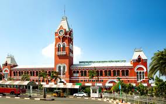

City Landscapes
Explore the Beauty of Urban Life

New York

New York City, the city that never sleeps, is a hub of culture, finance, and entertainment. From the towering skyscrapers to the bustling streets, this city offers endless opportunities for exploration and adventure.
Paris

Paris, the city of love, is famous for its iconic landmarks, exquisite cuisine, and romantic ambiance. A walk along the Seine River or a visit to the Eiffel Tower captures the essence of this beautiful city.
Tokyo

Tokyo is a bustling metropolis where tradition meets modernity. From the serene temples to the neon-lit streets of Shibuya, this city is a vibrant mix of the old and the new.
Dubai

Dubai, known for its luxury shopping, ultramodern architecture, and lively nightlife, is a city of superlatives. The Burj Khalifa and Palm Jumeirah are just a few of the attractions that make Dubai a top destination.
London

London, a city steeped in history, offers a blend of the traditional and the contemporary. From the historic Tower of London to the modern skyline of the City, London is a city of contrasts.
Chennai

Chennai is the sixth-most populous city in India and forms the fourth-most populous urban agglomeration. Incorporated in 1688, the Greater Chennai Corporation is the oldest municipal corporation in India and the second oldest in the world after London.